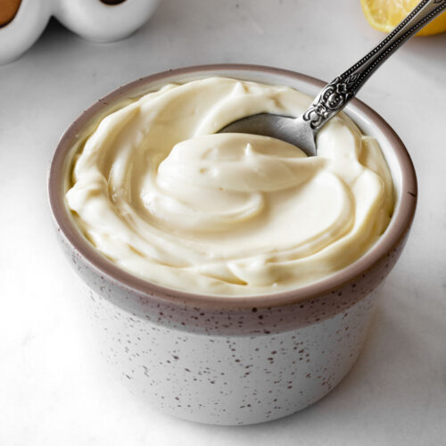

Mayonnaise

Description
Ahhh... home-made mayonnaise. Fresh. Inexpensive. Quick. Delicious. Not to mention additive-free. Schmear it on just about anything to maximize life's simple pleasures!
Ingredients
- 1 egg
- 1 tsp Dijon mustard
- 2 tsp white wine vinegar or lemon juice
- ¼ tsp salt
- 240 ml light olive oil or avocado oil
Instructions
- Crack the egg into a tall and narrow mixing bowl, a large glass measuring cup, or beaker, and add the Dijon mustard, vinegar, and salt.
- Place the immersion blender in the bottom of the container before turning it on.
- Start mixing using one hand and use the other hand to slowly pour the oil into the bowl in a thin steady stream while you keep mixing.
- Note that the lowest layer is supposed to turn white and creamy before you raise the blender to the next layer.
- The mayonnaise is ready when it's thick and fluffy.
- Taste for seasoning.
- Add more salt, vinegar or lemon juice, and dijon based on your preferences.
Nutrients
| Carbs |
Protein |
Fat |
Calories |
Fibre |
Sugar |
Sodium |
Calcium |
Sat |
GL |
| (g) |
(g) |
(g) |
(kCal) |
(g) |
(g) |
(mg) |
(mg) |
Fat (g) |
|
| 0.18 |
2.307 |
78.26 |
703.38 |
0.07 |
0.11 |
277.93 |
11.93 |
11.33 |
0.01 |
Back to top of page